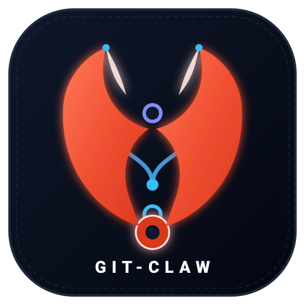

A visual, interactive cheatsheet for deterministic Git Worktrees orchestration.
Parallel human and AI workspaces without port conflicts or workspace collisions.
Effective Port = Base Port + Slot ID..env.worktree in each workspace.node_modules, target, .venv.Install the binary and configure shell auto-completions.
git-claw automatically as git claw.Zero configuration out of the box, with optional project tailoring.
-y to accept inferred defaults.Develop new features branched off main in fully isolated workspaces.
feature/<name>, allocates a unique Slot ID, generates .env.worktree, and symlinks shared caches.
--isolated: skips shared cache symlinking.
$EDITOR) or execute commands directly inside the worktree with environment variables loaded.
origin) with upstream tracking. Auto-infers the branch when executed inside the worktree directory.
main, deletes worktree directory, deletes local & remote branches, and reclaims Slot ID.
--keep-remote: preserves remote branch.--force: bypasses hook failures.
Standard fixes and urgent production patches.
main. Hotfixes are reserved for critical production repairs. Both share identical lifecycle commands.
Experimental exploration intended to be discarded without merging.
spike/<name>. Dropping safely destroys the directory, deletes the branch, and releases the Slot ID.
Automated Commitizen-style releases and manifest synchronization.
main branch without arguments:
feat!:, Minor: feat:, Patch: fix:).CHANGELOG.md grouped by category.Cargo.toml (Rust) or pyproject.toml / project.toml (Python/uv).Cargo.lock, uv.lock).chore: release <version> and tags main.Complete syntax table for all git-claw actions.
| Command | Action |
|---|---|
| git claw init [-y] | Initialize or update repository configuration |
| git claw list | Display active worktrees, assigned slots, and ports |
| git claw feature start <name> | Create and start isolated feature worktree |
| git claw publish [<name>] | Push worktree branch to remote with upstream tracking |
| git claw finish <name> | Verify tests, merge into main, delete branch, and cleanup |
| git claw spike start|drop <name> | Create or discard disposable experiment worktree |
| git claw open|run|cd <name> | Workspace editor open, command execution, or path navigation |
| git claw tag [<version>] | Commitizen auto bump or explicit release tag |
| git claw completion <shell> | Generate shell auto-completion script |